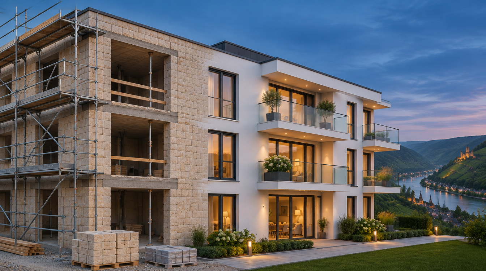
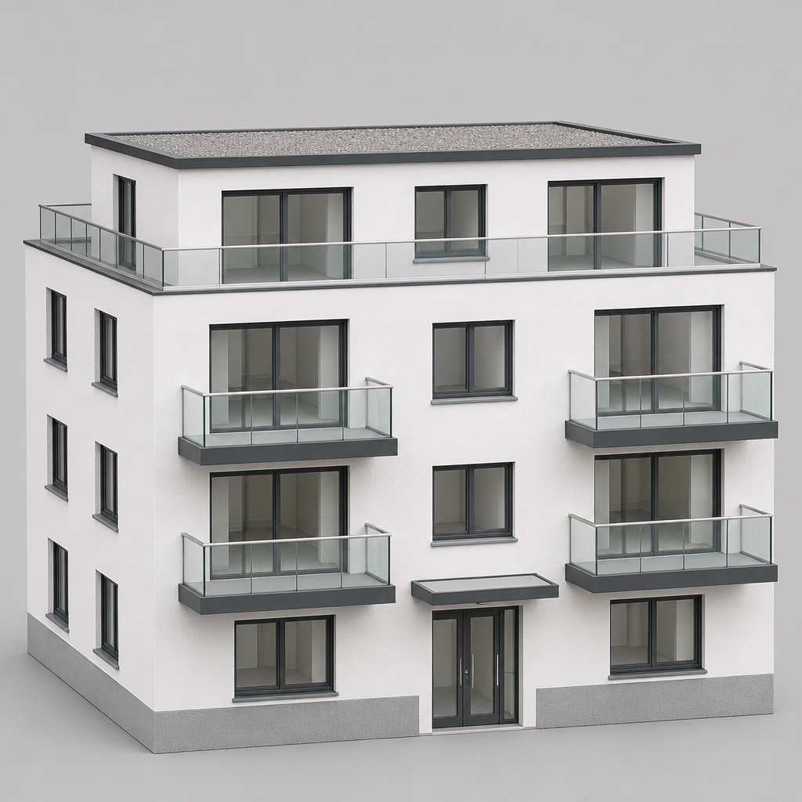

Bauphasen-Modell
Der Prototyp aus Blatt 01. Zeigt den Weg vom Fundament zum schlüsselfertigen Haus und verknüpft jede Phase mit einer Leistung.
Die bestehende Website der Ackermann Bau-GmbH zeigt 18 Referenzen und 78 Jahre Firmengeschichte, erklärt aber kaum etwas davon. Dieser Blueprint ordnet die Inhalte neu und setzt ein drehbares 3D-Gebäudemodell als Leitmotiv ein.

So würde der Seitenkopf der neuen Startseite funktionieren: Das Gebäude lässt sich drehen und wächst mit dem Regler vom Fundament bis zum fertigen Haus. Das Modell ist aus exakten Körpern konstruiert, nach einer Bildvorlage aus Higgsfield.

Auf der echten Seite steuert das Scrollen den Regler. Jede Phase blendet dazu die passende Leistung ein, etwa Rohbau oder Innen- und Außenputz.
Geprüft wurden Startseite, Über uns, Vermarktung, Kleinbaustellen, Kontakt und eine Projektseite.
| Befund | Was das bedeutet | Lösung im Neuentwurf |
|---|---|---|
| Kritisch Kontaktformular fehlt | Auf der Kontaktseite steht statt des Formulars der Text [contact-form-7 id="331"]. Anfragen gehen nur per Telefon oder E-Mail. | Anfrage-Assistent in drei Schritten: Bauart, Ort, Rückrufwunsch. |
| Kritisch Projektseiten ohne Inhalt | Die Seite „Reihenhäuser – Andernach“ besteht aus Titel, einer Adresszeile und Fotos. Baujahr, Größe, Leistungsumfang fehlen. | Einheitlicher Projektsteckbrief mit Kennzahlen, Bauzeit, Leistungen und 3D-Modell. |
| Struktur Sehr lange Startseite | Rund 10.700 px Höhe bei 800 px Breite. Alle 18 Referenzen stehen ungekürzt untereinander. | Sechs ausgewählte Referenzen, der Rest über „Alle Referenzen“. |
| Struktur Filter mischt zwei Fragen | Zehn Filter in einer Reihe: Regionen (Koblenz, Neuwied) und Bauarten (Hallen, Wohnen) nebeneinander. | Zwei getrennte Filter: Bauart und Region. |
| Struktur Menü ohne Leistungen | Das Hauptmenü listet Referenzkategorien. „Über uns“ und „Kontakt“ liegen in einer zweiten Leiste darüber. Was die Firma anbietet, steht nirgends im Menü. | Ein Menü mit fünf Punkten, siehe Blatt 03. |
| Auffindbarkeit Lücken für Suchmaschinen | Keine Seitenbeschreibung, zwei Hauptüberschriften, 13 von 15 Bildern ohne Alternativtext. | Saubere Überschriften, Beschreibungen und Bildtexte je Seite. |
| Technik Karte hinter Zustimmung | Die Google-Karte lädt erst nach Klick. Vorher bleibt eine leere Fläche mit Hinweistext. | Eigene 3D-Regionskarte ohne fremde Dienste, siehe Blatt 05. |
| Technik Schwerer Bild-Slider | WordPress mit Revolution Slider und 18 Skripten für eine Seite, die fast nur Text und Fotos zeigt. | Statische Seite, 3D nur dort, wo es etwas erklärt. |
Ein Satz, was die Firma baut und wo. Daneben das 3D-Modell aus Blatt 01 und zwei Wege: Bauvorhaben anfragen oder Referenzen ansehen.
Fünf Felder mit je einem Satz. Jedes führt auf eine eigene Seite mit passenden Referenzen.
Sechs ausgewählte Projekte, daneben die Karte der vier Landkreise mit allen Standorten.
Karl, Rolf und Oliver Ackermann als kurzer Zeitstrahl. Dazu die Partner: Handwerkskammer Koblenz, BG BAU, Bauwirtschaft Rheinland-Pfalz.
Was gerade entsteht und was zum Verkauf steht. Ersetzt den heutigen Menüpunkt „Vermarktung“.
Telefonnummer groß, darunter der Anfrage-Assistent. Bürozeiten Montag bis Freitag, 8 bis 17 Uhr.
3D kommt nur dorthin, wo es eine Frage beantwortet. Jeder Baustein hat ein Standbild als Ersatz für langsame Geräte.
Der Prototyp aus Blatt 01. Zeigt den Weg vom Fundament zum schlüsselfertigen Haus und verknüpft jede Phase mit einer Leistung.
Reliefkarte von Rhein und Eifelrand mit einem Pin je Projekt. Ersetzt die Google-Karte und braucht keine Zustimmung.
Jede Referenz bekommt ein konstruiertes Modell zum Drehen, nach Fotos oder Plänen gebaut, mit eingeblendeten Kennzahlen.
Mauerwerk, Dämmung, Putz als auseinandergezogene Schichten. Erklärt, was „massiv gebaut“ heißt.
Gebäude werden konstruiert und nicht aus Bildern berechnet. Ein erster Versuch mit einem aus einem Bild berechneten Modell hatte unebene Wände. Konstruierte Modelle haben plane Flächen, scharfe Kanten und brauchen nur wenige Kilobyte. Higgsfield liefert die Vorlagen, die Stimmungsbilder und später Gelände oder Bepflanzung.
Kennzahlen und Originalfotos zu den 18 Referenzen. Ohne sie bleiben die Projektseiten so leer wie heute.
Das Blau der heutigen Seite bleibt als Erkennungsfarbe. Dazu kommen Schrift, Raster und Bildsprache.
Statische Seite mit three.js. Kontaktformular und Anfrage-Assistent von Anfang an.
Bausteine B und C, zuerst für sechs Projekte.
Weiterleitungen von allen alten Adressen, damit bestehende Links und Suchergebnisse weiter funktionieren.
Unabhängiger Konzeptentwurf. Diese Seite ist nicht die Website der Ackermann Bau-GmbH. Angaben zur Firma stammen von ackermann-andernach.de, abgerufen am 16.11.2026. Die Bilder sind KI-generiert. Bilder und 3D-Modell zeigen kein reales Gebäude.